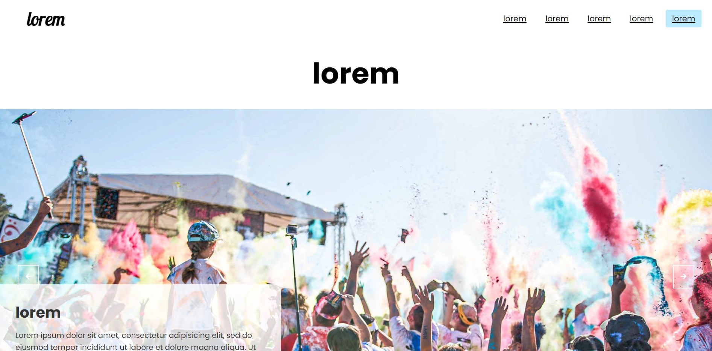

Darren Ang Jun Rong
Student Number : 200553559
Introduction
Portalble Planet is a website I have created which acts as a global travel magazine for my readers to find out more and learn more about various countries all over the world.
I chose the site name Portalble Planet as the name goes, the planet is portable via this portal (website), hence making it Portalble! Although we might not be physically there, we can still experience and learn about any country in the world with our portable devices from my website.
The structure that I chose to implement my website is a hierarchical model where my readers would browse the page from top to bottom and go through the different sections available to them in this order. The navigation links are located at the top and also at the bottom in the footer. As for mobile and tablet displays, the structure is identical, with an exception of a drop-down navigation bar.
State 3 things that have inspired you when creating your website
- The main reason that inspired me to create my website is the state of the world today. As we all know, the world is currently hit by the COVID-19 Pandemic and travelling has become less of an option for most of us as we just stay in our own country. With that, I would like to continue connecting my readers to the rest of the world and despite not being able to travel there, they would still be able to learn and explore other countries! They could even use this time to learn more and plan for their next trip which I'm sure everyone is eager to go on once travelling resumes.
- Lonely Planet which is a travel guide website was a website that inspired me on creating my website. The website contains a vast amount of information on almost every country in the world and is a website I would always visit whenever I was going on a holiday or just wanting to know more about anything in another country!
- I was also inspired by various programming YouTubers and channels on Youtube which had tutorials and videos educating me on how to make use of HTML, CSS, and Javascript to create different amazing functions to build a website and this inspired me to learn from them and implement them in my website by my ways.
State 3 ways in your site is accessible
- My website is designed to be accessible to color-blind users where I only use colors that are color-blind friendly. The colors black, white, and blue are the colors I have chosen to use for my site which would all work well when presented to them. The only exception to the color scheme would be the pictures I have used on my site which could not be helped as making them monochrome would destroy the beauty of the image.
- I have also avoided the use of Serif fonts and many cursive fonts to ensure that the words are well visible to my readers, especially to the elderly or anyone with poor vision as my website is catered to everyone. The only places where I've used cursive are the logo of the website and at the title of banners on different pages which are not as important and although are in cursive, they are in large font sizes to ensure they are visible.
- My website is also accessible across various platforms not just on computers and laptops. My website is mobile-friendly and tablet-friendly as it is responsive and caters to all devices of different dimensions.
State 3 ways in which you have considered usability in your site
- My website is effective as it directly caters to what my readers are looking for which would be in this case information on different countries. They can just dive into whichever country they want to learn more about and start reading and learning.
- My website is efficient to my readers as I have separated the countries according to their respective continents. My reader who might be just interested in learning more about a specific country would just have to click into the continent and scroll shortly to see the tab on the country he or she is looking for. My readers need not spend much time scrolling or clicking to arrive at the country they want to learn more about, making my website fast and efficient.
- My website has clear navigation with navigation links on the top and bottom of the page on every page to bring them to whichever page they would like to go to, not requiring them to scroll all the way up to do so. My website is designed to be simple and in big fonts so it's more visible and clearer to my readers.
State 3 things you had to learn/find out yourself when creating your site, and describe how you did that
- As high-quality images were required for my site to show the beauty of landscapes and the background of countries to ensure they are attractive to my readers, I had to learn how to resize images to fit my requirements without losing their quality. Hence, I learned how to do so by using photo editing applications after looking up the web on how to do so together with the use of CSS.
- I've researched and learned about various CSS functions that were previously unknown to me from websites such as w3schools to carry out my styling to make my website not only attractive but neat and presentable.
- I've learned from tutorials from YouTube and Google on several features that I could implement to my site by using CSS and Javascript such as the slider and cards used on my site, allowing the website to look more appealing to my readers.
What aspects of your work do you think worked well and why?
I personally feel proud and really love the design of my website. I feel that I have chosen a good color theme and designed it in a way that is not just attractive with its simplicity, but easy to navigate as well. I think the navigation in my site works really well and with just a few clicks on scrolls, my readers would be able to reach their destination in no time thanks to my well-placed navigation links found on the top and bottom of my site bringing them to the section they want to go.
What aspects of your work could be improved? How might you do things differently another time?
I felt that my website could be more informative and beautiful. Due to the lack of time and adhering to the requirements of only 5 web pages, I was unable to add more videos, pictures, and information for each country to allow my site to be more informative. As there are only text and pictures, it is not as appealing as I wanted it to be. Hence, at another time and perhaps after the submission, I would want to further develop my website by adding videos and sound clips making the website more lively and attractive, and turning it into an actual travel guide website. Also, I feel that the information box for each country looks slightly unattractive and I would want to change it up to ensure my readers would not feel bored.
What resources did you use in your work? List any sources of information, libraries, plugins, code or tools.
[1] Inspiration and information from Lonely Planet
[2] HD Images used in site obtained from Pexels
[3] HD Images used in site obtained from Unsplash
[4] Navigation menu bar customized from Coding Nepal, Responsive Navigation Menu Bar using HTML & CSS, Aug 9, 2019
[5] Image slider customized from Traversy Media, Full Screen Responsive Image Slider | No Libraries, Mar 20, 2019
[6] Cards customized from webIQ, Responsive Cards pure HTML & CSS | webIQ, May 25, 2020
[7] Modals customized from CB Tech, Create Multiple Modals on web page using single JavaScript. | Programming Trick, Nov 9, 2018
[8] Footer customized from Brian Design, How to Make a Footer in HTML and CSS for Beginners Tutorial - Fully Responsive, June 19, 2020
[9] Blog on Homepage customized from Code Farmer, Responsive Blog Section using CSS Grid | HTML/CSS3 (No Bootstrap), Nov 21, 2018
[10] Image Gallery on Europe page customized from FRONTEND BEAST, Responsive Image Gallery using Html CSS | Awesome Masonry Layouts, Jul 9, 2020
[11] Highlights section on Asia page customized from Easy Tutorials, How To Make A Website Header Using HTML And CSS Step By Step | Web Design In HTML & CSS, Aug 9, 2020
[12] Icons obtained from Font Awesome
Appendices
- Site Map
- Wireframes
Desktop Wireframes
Tablet and Mobile Wireframes
- Mockups
Homepage Mockups
Content Pages Mockups (ASIA, AMERICA, EUROPE)
Content Pages Mockups (Events)

END OF REPORT